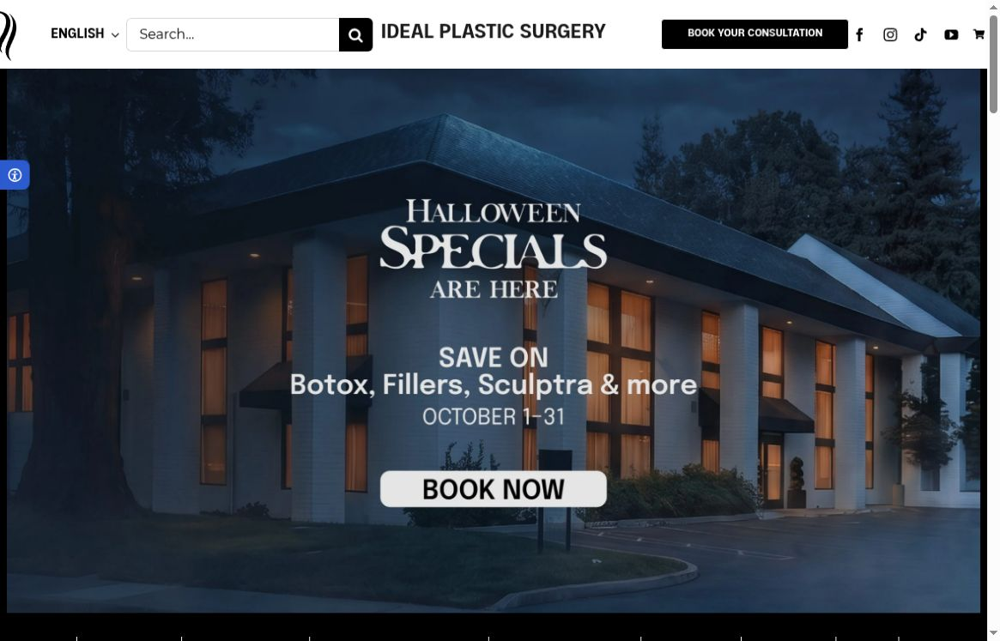
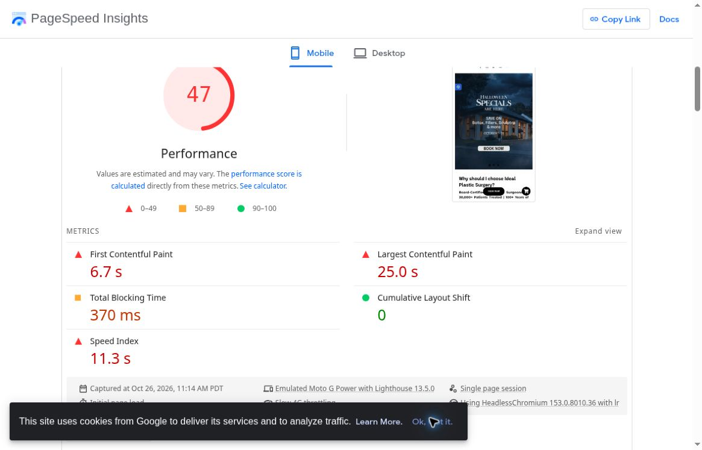
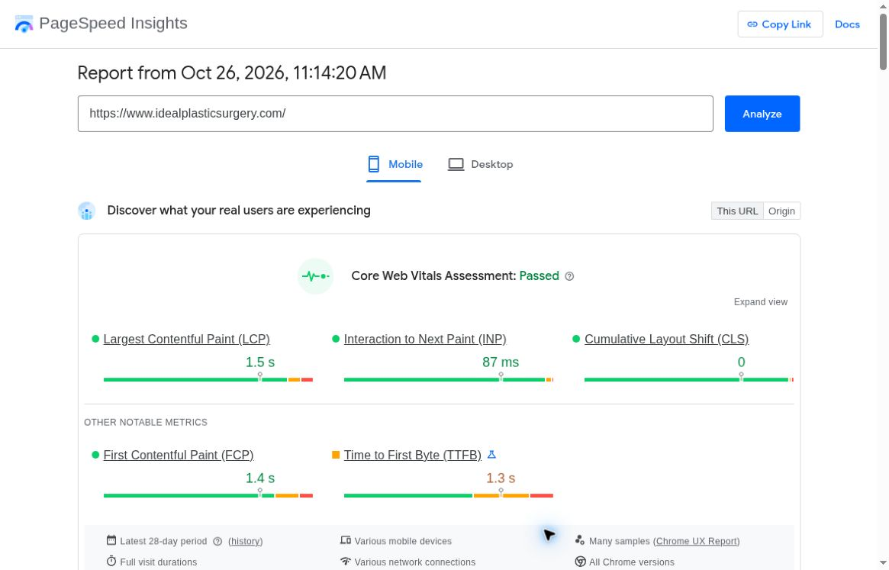
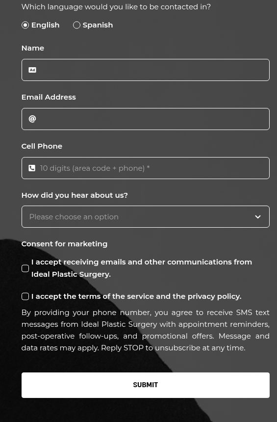

Local Meta ads
Reach nearby people on Facebook and Instagram.
A custom audit / Ideal Plastic Surgery
We’re Vessel Archive, a local Sacramento marketing team.
A short plan for Ideal Plastic Surgery.
Reach nearby people on Facebook and Instagram.
Real videos, photos and clear messages.
Get found through your Google Business Profile, site and blogs.
What you do well
Your site gives patients clear reasons to get to know the clinic.
Make the next step just as reassuring.
See clinic website ↗
What we found / 1 of 2
Main content took 25.0 seconds in Google’s phone simulation. Some slower connections may lose visitors before the page is useful. Oct 26 lab test; not every visit. Real-user results passed: 1.5 seconds. See original source ↗

Screenshot · October 26, 2026 ↗
Screenshot · October 26, 2026 ↗The form has an email checkbox, then says providing a phone number agrees to promotional texts. Patients may not know which messages are optional. Weight-loss inquiry page; no form submitted. See original source ↗

Screenshot · October 26, 2026 ↗What we found / 2 of 2
The consultation page says an advisor will phone, but gives no reply window. Ready-to-book patients do not know how long to wait. See original source ↗
How we would help
Reduce image sizes and delay nonessential page code. Retest on slower phones, while keeping the strong real-user results in view.
Separate care-related messages from promotions. Make each marketing choice clear and optional, with the clinic’s approval, so patients know what they are choosing.
State a realistic callback window, office hours and an easy phone option. Make clear that a request is not yet a booked visit.
Ideas for your next shoot
A short, calm introduction: how consultations work and which questions patients should bring.
Walk through the clinic and explain what happens after someone requests a consultation.
A clinician answers one common recovery question, with clear limits and no promise of a specific result.
A proposed starting plan / 1 of 2
We’d script, shoot and launch the first approved ads within a couple of weeks, alongside a website rebuild and clear brand direction. Lead with your team and a simpler consultation path.
We’d track which videos, offers and audiences bring calls and bookings, cut weak ads and send traffic to the new site. Use counts, not patient or treatment details, in ad reporting.
Proposed timing depends on agreed scope, access and clinical approvals.
A proposed starting plan / 2 of 2
We’d create new content around what worked, refresh the ads and tighten the site so more interested visitors take the next step toward a consultation.
Then repeat each month: shoot, launch, learn and improve.
Proposed timing depends on agreed scope, access and clinical approvals.
From one local team to another

Whether we work together or not, we hope this helps. We love seeing Sacramento-area businesses do well. If you’d like, we can talk through the next step.